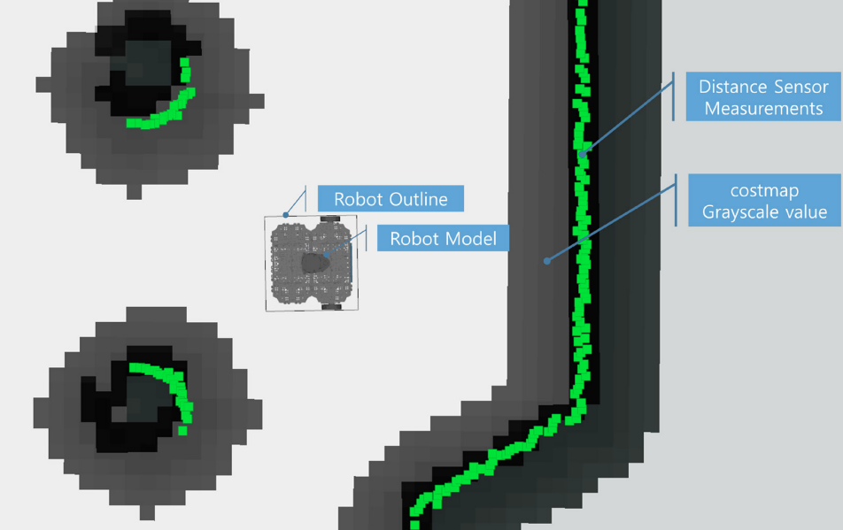
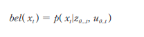
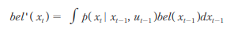
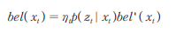
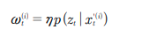
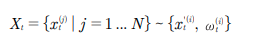
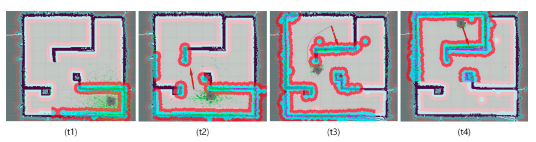
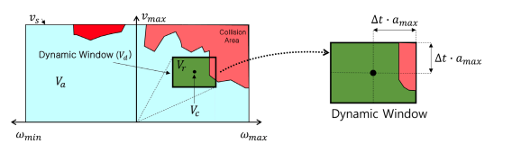
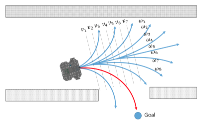

Navigation Theory
Navigation is a methodology which ascetains ones position as well as the most optimum route for a pre-determined destination. For navigation system for our robot we need to have
Costmap for obstacle detection
AMCL for adaptive localization
DWA for obstacle avoidance planning and avoiding obstacles
Costmap
In navigation, the costmap is responsible for calculating obstacle are, possible collision area and a robot movable area based on the pose of robot, sensor values, obstacle information, and the occupancy grid map optaind as a result from SLAM. There are two type of costmap:
Global Costmap: (path planning for the global area of the fixed map)
Local Costmap: (path planning and obstacle avoidance in the limited area around the robot)
Although these two are different in application, the representations are the same.
The costmap is expressed as a value between 0 and 255. These values show whether the robot is movable or colliding with an obstacle. The calculation parameters for these values are predetermined within our zetabot.
000: Free Area where robot can move freely
001~127: Areas of low collision probability
128~252: Areas of high collision probability
253~254: Collision area
255: Occupied area where robot can not move
{kind=link}
We may also visualize the costmap value with gray scale. The darker the pixels get, more likely there is an obstable. The green points represent obstacles found using the distance sensor.
{kind=link}
AMCL
Within our SLAM theory, we discussed about the Particle Filter, the Monte Carlo localization (MCL) pose estimation algorithm. The AMCL (Adaptive Monte Carlo Localization) is an improved version of MCL that allows for reduced execution time with less number of samples.
The basic goal with Monte Carlo Localization is to locate where our robot is in a given environment. That is we must get the X, Y value as well as the angular value of the robot on the map. For these purposes MCL algorithm calculates the probability of the location of the robot.
First, the belief (posterior probability using Bayesian update formula) of the location is calculated using the (X, Y, Angle) values as X_0, distance inforamtion obtained from the distance sensor up to time t as Z_0 and movement information obtained from the encoder up to time t as U_0.
{kind=link}
We must include hardware errors within our calculation, hence establish the sensor model and the moevement model.
With the models established, predict and update the Bayesian filter.
Prediction
Within this step, the position of the robot at the next time frame is calculated using the established movement model (which is a probability of x in relation to the hardware error), belief probability at the previous position and the movement information from the encoders.
{kind=link}
Update
For update step, we use the established sensor model probability which includes the hardware error, belief probability of the current position and normalization constant eta.
{kind=link}
With this, we have the general locational probability belief of our robot. We can start the particle filter and generate N particles using the calculated probability bel(x_i) of the current position. With MCL algorithm the we go through a Sampling Importance weighting Re-sampling process with our samples instead of particles. For AMCL, we extract a new sample set using the robot movement model at the probability belief of the previous position. For these new sample set, the weight is calculated using the distance inforamtion, and normalization constant eta.
{kind=link}
And in our resampling step, we create N samples of new X sampling (particle) sets using the new sampled x set and weight calculated for the new sampled x set.
{kind=link}
When this process is repeated, while the robot is moving, the proabbility of the estimated robot position increases in accuracy. For example, on the image below, we can see the converging location from t1 time frame to t5 time frame. All this process is referred to as “Probabilistic Robotics”.
{kind=link}
Dynamic Window Approach (DWA)
Dynamic Window Approach is a method for obstacle avoidance planning and avoiding obstacles. That is, a method that will quickly reach a target point while avoiding obstacles that can possibly collide with the robot.
In DWA the robot is not represented in X and Y coordinates but rather in the velocity search space with translation velocity v and the rotational velocity w as axes.
{kind=link}
Within the velocity search space, the robot has a maximum allowable speed due to hardware limitations and this is called Dynamic Window.
In the dynamic window, the objective function G(v, w) is used to calculate the translational velocty v and the rotational velocity w that maximizes the objective function which considers the direction, velocity and collision of the robot. With plotting, we can find optimal velocity among various v and w options to destination.
{kind=link}